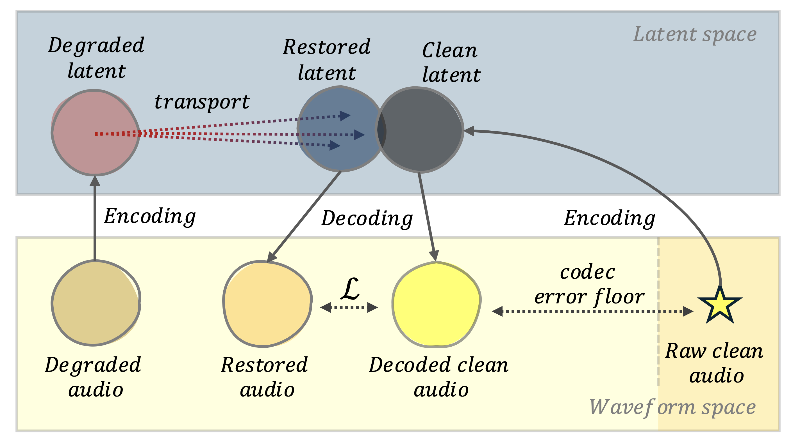
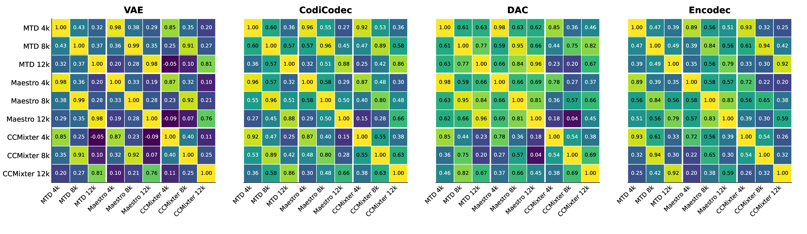
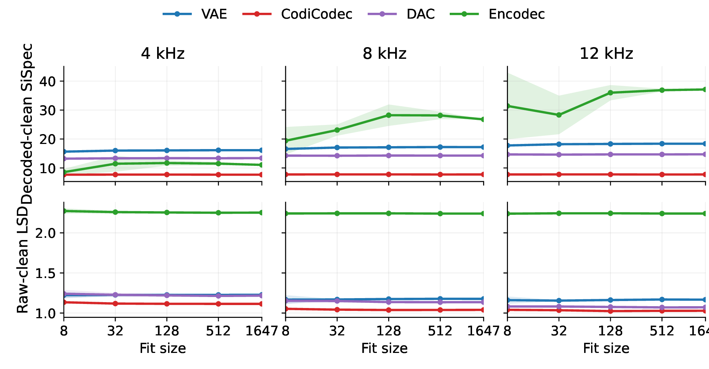
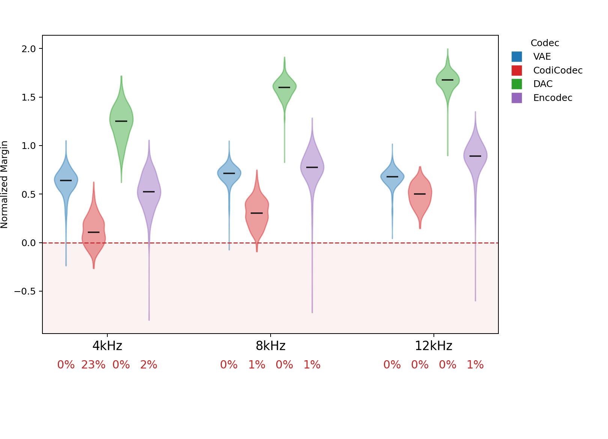

On the Geometry of Music Audio Restoration in Latent Spaces of Audio Codecs
This page starts with the matched listening examples for quick qualitative comparison, then adds a compact paper-results appendix with the draft figures and tables further down for quantitative context.
Abstract
Recent audio restoration increasingly relies on large-scale conditional latent generative modeling, including diffusion, Schrödinger Bridges, and Flow Matching variants, to invert degradations such as bandwidth limitation or noise. We present an analysis of the performance of various state of the art methods compared to simple arithmetic transformations in the latent space of multiple neural codecs for musical bandwidth extension. We show that estimating a single transport vector between the clean and degraded latent centroids on a reference set, and adding it to degraded latents, can yield restoration performance competitive with large diffusion models. This suggests, first, that some neural codec latent spaces exhibit structure aligned with audio bandwidth; and second, that in such cases complex conditional models may offer only limited gains over a simple vector addition. We argue that these findings reveal an interesting avenue for future research whereby models could take advantage of the latent space structure in order offer greater training and parameter efficiency, and overall better performance. Additionally, we propose to consider this simple arithmetic transformation as a baseline for music bandwidth extension research, as it allows an assessment of the contribution of learnable parameters towards restoration performance.
Overall Snapshot
This page combines five matched listening examples with shared posthoc raw-clean metrics computed directly from the WAV outputs against ground truth.
Overall:Local Mean with Clean Lowband is the strongest method on this five-example subset by the combined raw-clean metric summary.
Closest transport variants:Mean Shift and Local Mean sit just behind it in averaged LSD, while the published baselines trail further back.
Reading guide: lower LSD is better, while higher SiSpec and SI-SDR are better. In practice, LSD plus listening tends to be the most stable signal for this BWE subset.
This section collects the figures and tables currently used in the paper draft. Where figure assets are available, they are previewed directly here; the tables are included as expandable HTML versions so the website stays aligned with the manuscript while remaining easy to browse.
Figures
Figure

Conceptual restoration pipeline
We analyze audio restoration through latent transport geometry. For bandwidth extension, simple low-parameter latent transports already achieve strong waveform results on common audio metrics, in some cases approaching large generative baselines. For other degradations, the latent correction is less coherent, showing that restoration difficulty depends strongly on the encoder and the degradation.
Figure

Cross-dataset consistency of latent BWE transport
Per-codec cosine-similarity heatmaps of global mean-shift transport vectors across all dataset-cutoff conditions for bandwidth extension. Each panel corresponds to one codec and compares the nine conditions formed by the three datasets (MTD, Maestro, and CCMixter) and three cutoff frequencies (4, 8, and 12 kHz).
Figure

Sample efficiency of mean-shift estimation across codecs
Decoded-clean SiSpec and raw-clean LSD as a function of fit subset size, grouped by cutoff and codec. Starting with just 8 samples, most metrics stay similar as fit subset size grows, except Encodec on decoded-clean SiSpec, suggesting strong sample efficiency for deriving effective transport probes.
Figure

Identity preservation analysis across codecs
Normalized BWE margin violin plots across codecs and cutoffs. Percentages beneath each codec indicate the share of samples with negative normalized margin. Lower percentage means better identity preservation.
Tables
Table
Bandwidth extension results on MTD and CCMixter
Bandwidth extension results on mtd and ccmixter. The table compares large learned baselines with zero-parameter mean-shift and local-mean transports across VAE, CodiCodec, DAC, and Encodec.
Show table
Method
Variant
Params
MTD
CCMixter
4 kHz
8 kHz
12 kHz
4 kHz
8 kHz
12 kHz
LSD
SiSpec
ViSQOL
LSD
SiSpec
ViSQOL
LSD
SiSpec
ViSQOL
LSD
SiSpec
ViSQOL
LSD
SiSpec
ViSQOL
LSD
SiSpec
ViSQOL
AudioSR†
±280M
1.75
21.74
3.39
1.81
27.26
3.23
1.85
28.97
3.15
2.00
12.50
2.74
1.86
14.93
3.09
1.75
18.35
3.51
CQTDiff†
±15M
1.74
10.62
1.75
1.63
17.42
1.78
1.57
21.62
2.00
2.01
14.67
1.97
2.06
15.88
1.86
2.10
16.34
1.85
IBAR†
±1B
1.12
12.31
2.99
0.92
12.94
3.52
0.85
13.08
3.84
1.64
7.11
2.37
1.41
10.46
2.60
1.36
7.86
2.74
A2SB†
no part.
±565M
1.33
25.51
2.55
1.05
33.10
3.20
0.87
35.34
3.93
1.93
14.05
2.77
1.71
19.95
3.20
1.48
27.17
4.04
2-part.
±565M
1.29
28.15
3.10
1.07
34.36
3.71
0.88
35.97
4.20
1.85
18.00
2.85
1.62
23.39
3.43
1.45
29.26
4.21
4-part.
±565M
1.77
27.56
3.44
1.59
34.25
3.82
1.51
36.07
4.27
1.84
17.46
2.65
1.65
23.17
3.43
1.50
29.20
4.23
VAE
mean shift
0
1.29
10.01
3.45
1.15
10.13
3.84
1.14
10.13
3.78
1.57
10.21
2.74
1.44
10.67
3.12
1.31
10.74
3.63
local mean
0
1.28
10.01
3.54
1.15
10.13
3.89
1.15
10.13
3.79
1.55
10.14
2.80
1.42
10.64
3.16
1.30
10.76
3.69
CodiCodec
mean shift
0
1.17
7.03
3.22
1.08
7.09
3.41
1.05
7.08
3.59
1.52
6.02
2.67
1.41
6.33
2.96
1.30
6.35
3.42
local mean
0
1.13
7.05
3.31
1.06
7.12
3.48
1.03
7.12
3.65
1.49
5.94
2.75
1.39
6.34
3.06
1.29
6.35
3.50
DAC
mean shift
0
1.23
13.37
3.14
1.15
13.98
3.54
1.08
14.10
3.85
1.71
12.03
2.65
1.56
12.88
2.90
1.51
13.45
3.58
local mean
0
1.17
13.34
3.32
1.11
13.98
3.56
1.06
14.11
3.84
1.66
11.82
2.70
1.56
12.97
2.97
1.50
13.43
3.65
Encodec
mean shift
0
1.64
8.10
2.31
1.59
11.07
3.18
1.55
11.21
3.57
1.92
18.22
2.72
1.83
18.72
2.93
1.73
18.93
3.49
local mean
0
1.68
8.05
2.33
1.62
10.97
3.20
1.57
11.17
3.53
1.96
18.01
2.68
1.82
18.58
3.03
1.72
18.82
3.55
Table
Bandwidth extension results on Maestro
Bandwidth extension results on maestro. The table reports cutoff-specific LSD and SiSpec for external baselines and the transport baselines across all four codecs.
Show table
Method
Variant
4 kHz
8 kHz
12 kHz
LSD ↓
SiSpec ↑
LSD ↓
SiSpec ↑
LSD ↓
SiSpec ↑
CQTDiff†
1.154
31.49
1.137
32.99
1.129
33.33
IBAR†
0.769
12.69
0.688
12.22
0.616
13.48
A2SB†
4-part*
0.773
34.32
0.659
41.69
0.545
42.60
VAE
mean shift
1.185
11.34
1.164
11.34
1.130
11.36
local mean
1.160
11.41
1.146
11.34
1.124
11.37
CodiCodec
mean shift
0.975
7.94
0.938
7.97
0.923
7.91
local mean
0.960
7.90
0.929
7.94
0.919
7.93
DAC
mean shift
1.041
15.35
1.003
15.64
0.998
15.72
local mean
1.016
15.38
1.000
15.66
0.999
15.73
Encodec
mean shift
0.901
19.50
0.799
19.91
0.742
20.05
local mean
0.825
19.55
0.795
19.99
0.761
20.09
Table
Cross-codec held-out 4 kHz BWE transport comparison
Cross-codec comparison of held-out 4 kHz BWE transport results on mtd and ccmixter, split into decoded-clean and raw-clean evaluation blocks.
Show table
Codec
Method
MTD
CCMixter
Decoded-Clean
Raw-Clean
Decoded-Clean
Raw-Clean
LSD
SiSpec
ViSQOL
mel-STFT
LSD
SiSpec
ViSQOL
mel-STFT
LSD
SiSpec
ViSQOL
mel-STFT
LSD
SiSpec
ViSQOL
mel-STFT
VAE
degraded
2.167
14.105
3.297
2.124
3.279
9.979
3.155
2.510
3.945
13.668
2.060
4.818
4.011
9.207
2.019
5.081
mean shift
0.799
15.784
3.548
0.631
1.288
10.088
3.340
1.030
1.359
14.661
2.987
1.407
1.578
10.215
2.744
1.710
local mean
0.789
15.999
3.650
0.620
1.279
10.091
3.428
1.026
1.312
14.684
3.036
1.367
1.551
10.146
2.800
1.675
decoded clean
1.113
10.003
4.010
1.012
1.098
10.708
4.086
1.013
Codicodec
degraded
1.964
7.325
3.241
2.770
2.028
6.999
3.173
2.895
3.386
6.294
2.002
4.463
3.492
5.858
1.997
4.709
mean shift
1.119
7.377
3.289
1.338
1.172
7.028
3.229
1.454
1.409
6.240
2.737
1.575
1.522
6.023
2.677
1.836
local mean
1.081
7.383
3.380
1.250
1.132
7.055
3.314
1.363
1.383
6.233
2.781
1.542
1.494
5.947
2.750
1.789
decoded clean
0.903
7.088
3.917
0.961
1.066
6.324
3.863
1.210
DAC
degraded
3.438
13.278
3.267
4.079
3.439
13.635
3.244
4.074
4.136
13.308
2.060
5.238
4.356
11.113
2.040
5.635
mean shift
1.185
13.273
3.167
1.251
1.231
13.371
3.143
1.302
1.695
11.655
2.790
1.901
1.717
12.032
2.657
1.738
local mean
1.115
13.310
3.381
1.121
1.174
13.340
3.328
1.180
1.618
12.609
2.846
1.802
1.661
11.828
2.702
1.627
decoded clean
0.956
14.336
4.206
0.723
1.215
12.800
4.270
1.093
Encodec
degraded
3.470
7.712
1.512
5.429
3.534
7.784
1.523
5.473
3.254
17.768
1.618
3.814
3.549
18.008
1.642
3.926
mean shift
1.228
8.603
3.142
1.479
1.646
8.105
2.389
1.693
1.225
18.121
2.851
1.332
1.929
18.223
2.729
1.575
local mean
1.228
8.705
3.281
1.461
1.680
8.056
3.000
1.733
1.279
17.918
2.772
1.409
1.967
18.018
2.684
1.639
decoded clean
1.497
11.395
4.171
1.092
1.619
18.842
4.253
0.963
Table
Restoration task complexity in latent spaces
Average cosine similarity and ΔLSD metrics on MTD across codecs using the global mean-shift transport for bandwidth extension, denoising, declipping, and dereverberation.
Show table
Task
VAE
CodiCodec
DAC
Encodec
cos(θ) ↑
ΔLSD ↑
cos(θ) ↑
ΔLSD ↑
cos(θ) ↑
ΔLSD ↑
cos(θ) ↑
ΔLSD ↑
BWE
0.985
2.086
0.986
0.928
0.986
2.286
0.481
1.941
Denoising
0.627
0.516
0.596
0.502
0.596
0.755
0.464
0.540
Declipping
0.337
0.002
0.290
0.025
0.189
0.069
0.129
-0.002
Dereverberation
0.295
0.065
0.281
0.228
0.323
0.406
0.218
-0.158
Comparison of Bandwidth Extension Baselines and Mean-Shift Latent Transports
These matched examples combine clean, degraded, published baseline, and transport-based outputs so we can compare restoration behavior both by ear and by spectrogram. The original transport cards on this page, Mean Shift and Local Mean, are computed in the latent space of the Stable Audio Open VAE. Local Mean with Clean Lowband uses the same local-mean restoration, except that content below the 4\,kHz cutoff is replaced by the original clean signal.
Each example now also includes audio-only saved-transport renders for CodiCodec, DAC, and Encodec using the MTD 4 kHz transport vectors. Those added codec cards reuse the same degraded and clean excerpts but do not yet have dedicated spectrogram images embedded in the page.
Audio example source. The listening examples on this page are taken from the A2SB demo website.
Example 1
20.0 s excerpt | bandwidth-extension cutoff: 4 kHz | transport variants use the Stable Audio Open VAE